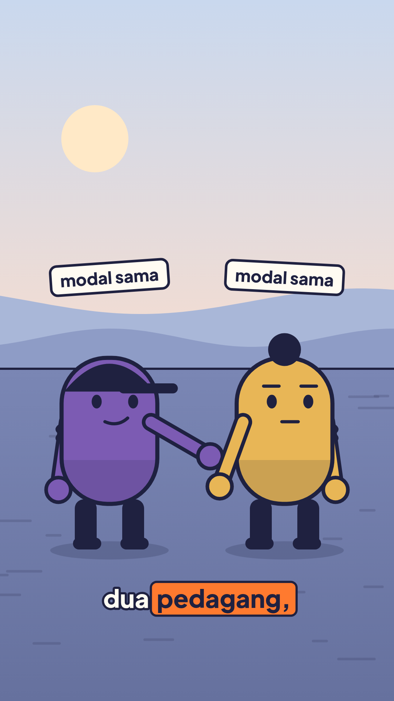
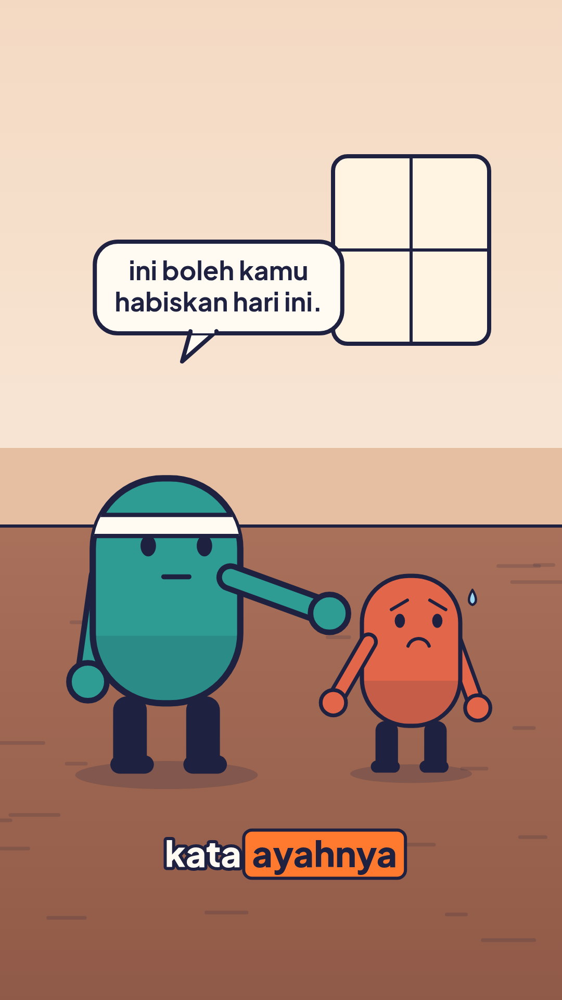
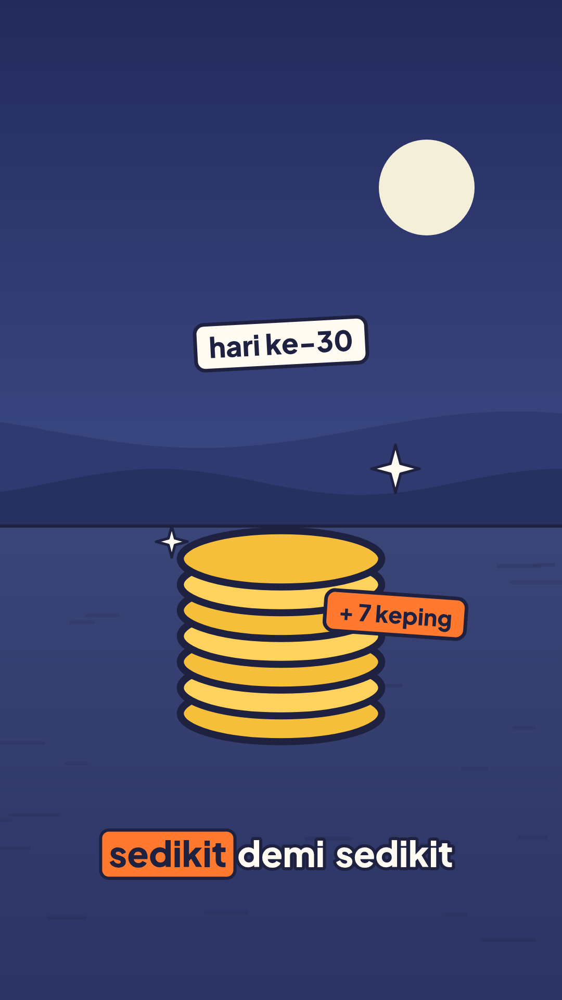
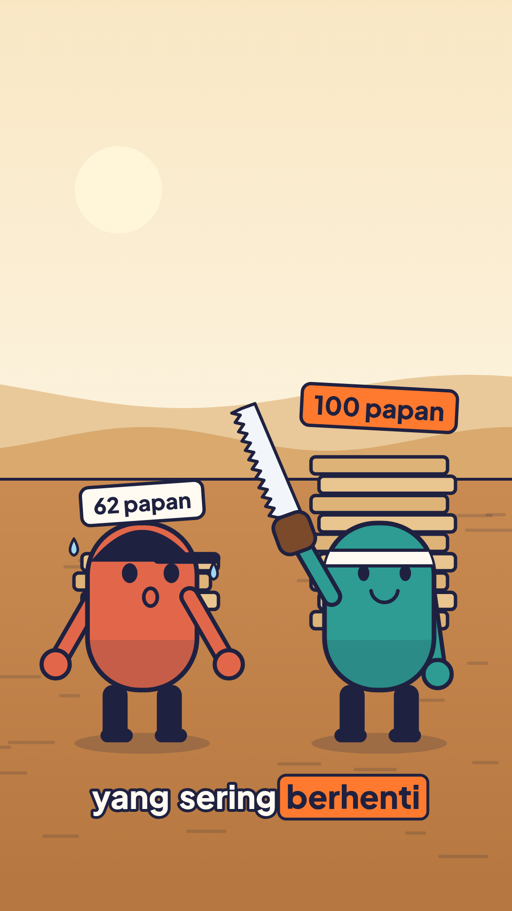

Bukan, Tapi
Style board v1. Narrated Indonesian parables on a flat stage: you think you know the ending, then it turns. Original bean characters, one spoken word in orange, cuts on every clause.
Sample compositions — four unrelated illustrative stories




Characters and acting
Fixed colours and body colours
ink #1F2140
white #FFFBF2
highlight #FF7A2F
clay
teal
plum
moss
sand
Stage palettes — one base per episode
Type — Plus Jakarta Sans (SIL OFL)
Caption 800 / 68 px, lowercase
yang sering berhenti
Tag 800 / 46 px · Bubble 700 / 50 px
100 papan
asah dulu.
Motion
First change inside 1 s. A new shot per clause, 2.4–3.1 s each. Hard cuts; at most five whip slides. Nothing holds still for 2 s.
All copy and figures are illustrative. Built from five reference clips (see references/ANALYSIS.md); no reference character, wording, story or watermark is reused.